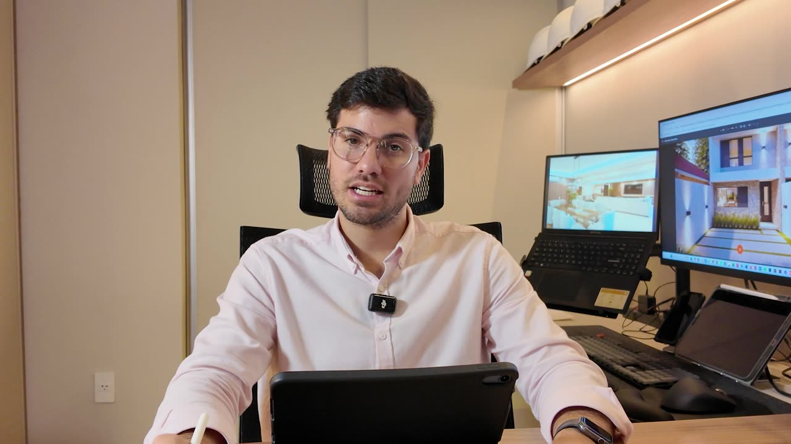
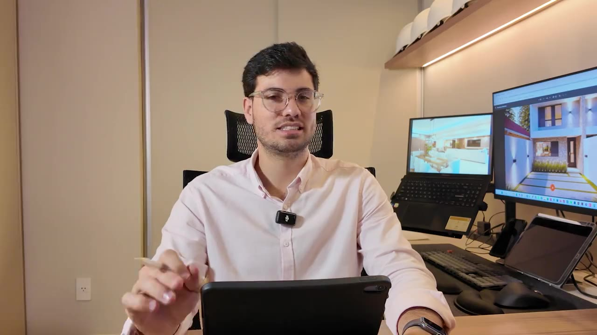
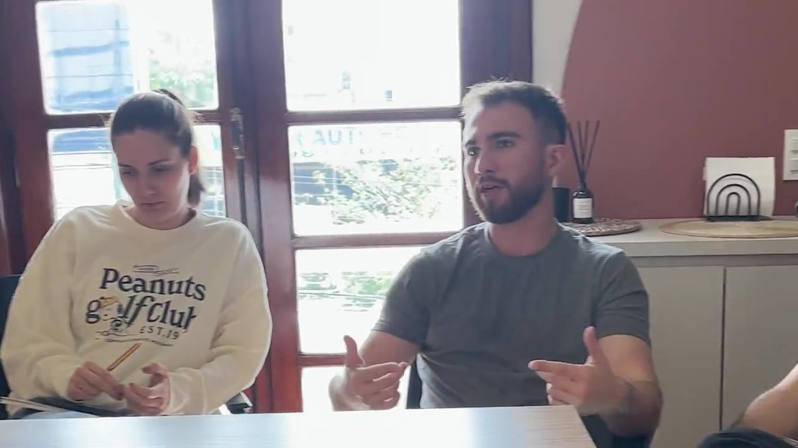

Todas al ancho real que tiene el video en el celular. A es la que está publicada hoy.
Círculo naranja al centro. Le tapa la cara.

Cuadrado naranja abajo a la izquierda, con esquinas rectas como el resto de la marca. La cara queda libre con cualquier cuadro.
Suma "Ver el video" y la duración. Es la más clara: la persona sabe qué pasa al tocar y cuánto dura.
Mismo botón de hoy, pero con un cuadro donde él está más arriba: el círculo cae sobre el escritorio.

La escena con clientes: el círculo cae justo en el hueco entre las dos personas y no tapa a nadie. Además muestra de entrada de qué se trata la reunión.

La combinación: el cuadro de la reunión con la barra de texto abajo.